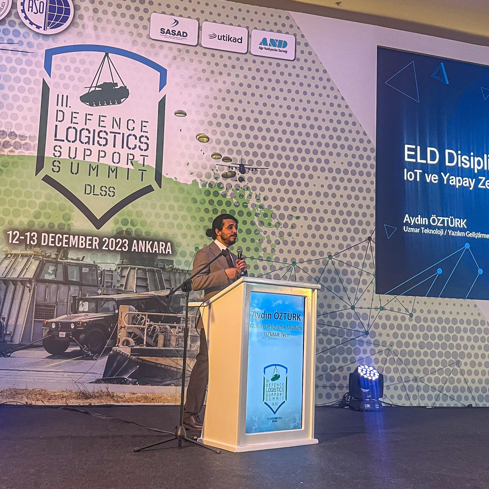
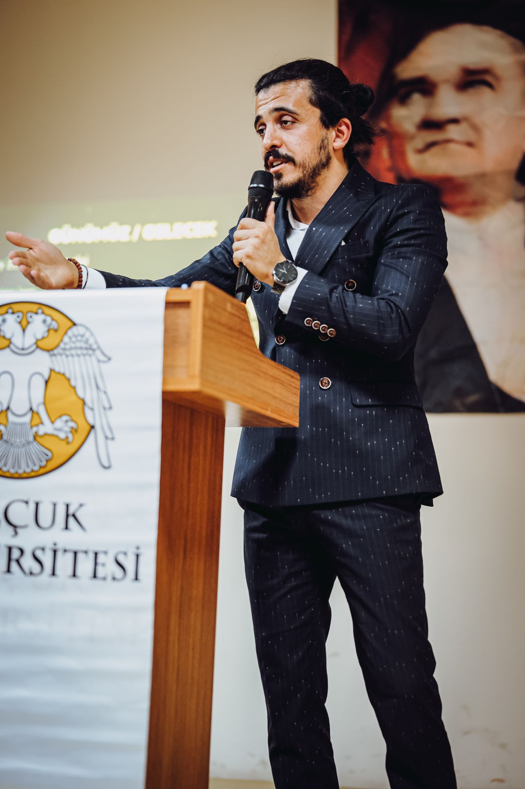

About
I am a Software Development Manager at UZMAR, with extensive experience as a Full-Stack Developer and Software Architect. I specialize in designing scalable ERP and IoT solutions, and building robust web and mobile applications. My tech stack includes frameworks and tools such as Grails, Spring Boot, Node.js, GoLang, React, AngularJS, Docker, and Kubernetes.
I’m deeply passionate about innovation and currently focused on advancing my skills in artificial intelligence, machine learning, LLM, and deep learning — exploring how these can enhance industrial software systems.
Latest Medium Posts
- Loading...
Experience
Software Development Manager
UZMAR Technology | Jul 2023 - Present- Leading a team of 10 developers, overseeing the end-to-end lifecycle of two core digital products.
- Introduced a new digital product from concept to deployment, aligning with business strategy.
- Driving Agile transformation using Jira, with a focus on continuous delivery and quality.
- Facilitating cross-departmental coordination and mentoring junior engineers to build a strong development culture.
Chief Software Architect
UZMAR | Nov 2021 – Jul 2023- Architected SEM ERP, a robust and scalable platform tailored for large-scale industrial operations.
- Designed real-time IoT integrations supporting predictive maintenance, energy efficiency, and process automation.
- Conducted hardware feasibility and system design studies for Industry 4.0 initiatives.
- Spearheaded CI/CD pipelines, documentation standards, and led cross-functional development teams.
Full Stack Developer
UZMAR | May 2018 – Nov 2021- Full-stack development of SEM ERP using Grails, AngularJS, ReactJS, and RabbitMQ.
- Developed cross-platform mobile applications with React Native and Expo.
- Led IoT R&D initiatives: developed communication gateways using MQTT, MODBUS RTU/TCP, and ESP8266.
- Ensured system scalability and performance through containerization and automated testing.
Co-Founder
MedyaV | Nov 2015 – Jan 2018- Delivered custom CRM and software integration solutions for SMEs.
- Managed product roadmaps, client communications, and full-cycle development.
Senior Software Developer
VizyonMedya | Feb 2009 – Feb 2015- Built campaign optimization tools using Google Ads APIs and Google Analytics.
- Helped clients increase ROI by automating digital marketing performance insights.
Skills Summary
Programming Languages & Frameworks:
NodeJS, Java, GoLang, React, AngularJS, Grails, Spring Boot
Infrastructure & DevOps:
Docker, Kubernetes, Redis, RabbitMQ, MQTT, MODBUS, CI/CD Pipelines
Systems & Architecture:
Microservices, ERP/CRM Development, IoT Integrations, Real-Time Data Processing
Management & Tools:
Agile, Scrum, Jira, Project Planning, MS Project
Projects
UZMAR IoT Digital Transformation - Principal Software Architect & Product Owner
Dec 2021 – PresentI led the architectural design and implementation of a real-time IoT platform that connects vessels and shipyard systems for monitoring, diagnostics, and predictive maintenance.
- Designed and implemented a low-bandwidth telemetry system enabling continuous machine and system monitoring across navigation, propulsion, energy, and safety subsystems.
- Directed a cross-functional team (embedded systems, cloud, front-end) ensuring integration between shipboard sensors (MODBUS, NMEA, J1939) and cloud services (InfluxDB, Grafana, RabbitMQ).
- Developed APIs and protocols enabling real-time data exchange and visualization on dashboards used by engineering and operations.
- Drove system evolution from R&D prototype to a scalable, maintainable IoT product aligned with UZMAR’s Industry 4.0 roadmap.
SEM ERP - Principal Software Architect
May 2017 – PresentI architected and continue to lead the development of SEM ERP, a full-featured, modular enterprise platform designed specifically for project-based shipbuilding operations.
- Defined the system architecture based on microservices, message queues (RabbitMQ), and containerized deployments (Docker, Kubernetes).
- Led the full-stack development team across backend (Grails, Java, GoLang), frontend (ExtJS, AngularJS, React), and mobile (React Native).
- Implemented a fully integrated CI/CD pipeline using GitHub Actions and Jenkins, improving release stability and frequency.
- Modeled and delivered more than 12 functional modules including project management, cost control, subcontractor tracking, IoT integration, document management, and MRP.
- Worked closely with shipyard domain experts to embed industry-specific workflows into the system, resulting in rapid adoption and operational efficiency.
Education & Certificates
- Management Information Systems - Istanbul University - 2025
- Big Data and Business Analytics - Istanbul Technical University 2021
- Computer Programming - Selçuk University - 2014
- NLP - Istanbul University. 2014
- MCP (Microsoft Certified Professional Developer) - Microsoft 2012
Conferences
- "New Approaches in ILS Discipline with IoT and Artificial Intelligence Integration"
Defence Logistics + Support Summit 2023 Ankara
 - "Journey in Technology Transformation: Career Opportunities with Artificial Intelligence and IoT"
Selçuk University - 2023 Konya

Awards
- Valedictorian - Selçuk University